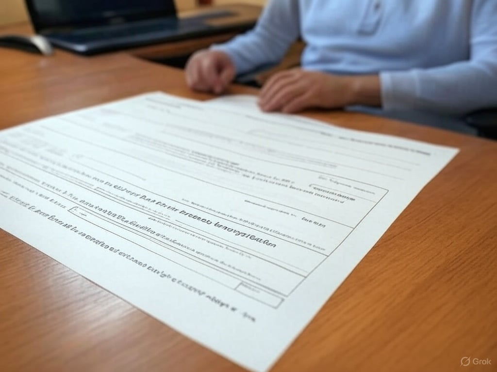
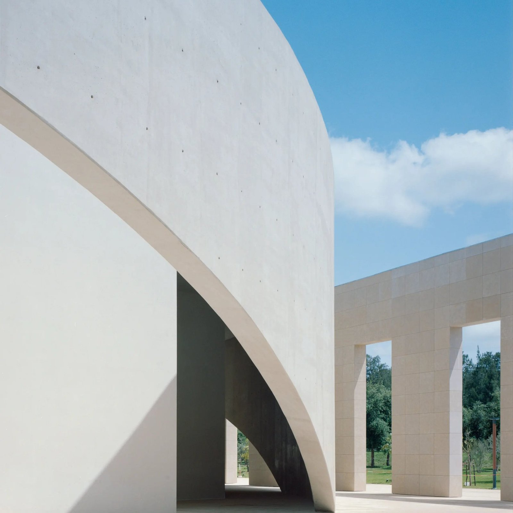
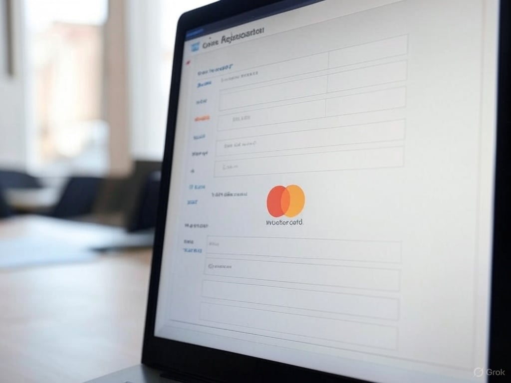
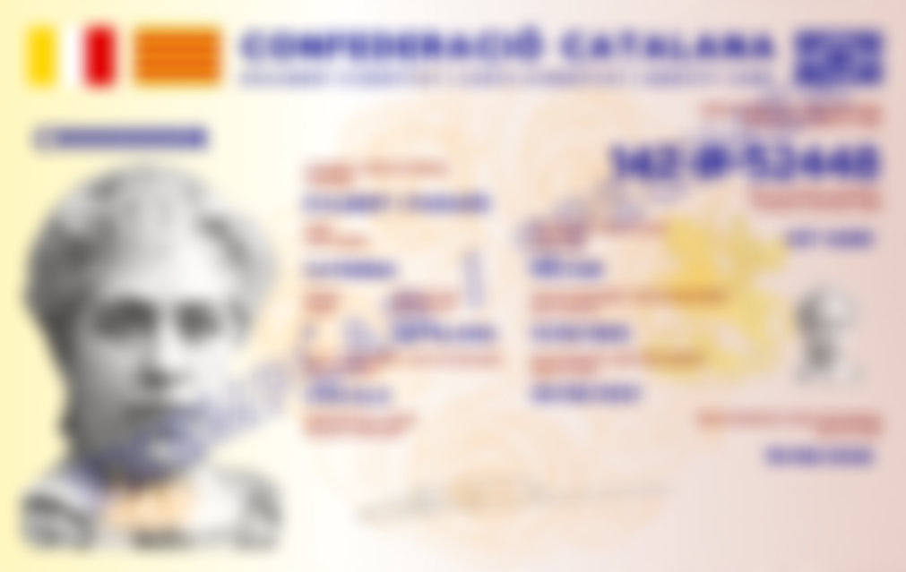

Inscriu-te al nostre cens sobirà
Inicia el procedimentCens Sobirà de la Confederació Catalana:
Convidem als catalans d’arreu del món, al marge del passaport que les nacions amb estat els hagin lliurat, a censar-se individualment per registrar el projecte d'emancipació nacional de l'Assemblea de Representants, com a subjecte polític de la minoria nacional catalana què liderem, per reclamar el nostre territori amb la finalitat d'exercir la nostra autodeterminació.


1
1. Esdevé català
Inscriu-te a l'únic cens oficial; Demana la targeta de ciutadà o resident; recull el teu kit; fes-lo servir per crear, gestionar i desenvolupar la teva relació administrativa amb l'autoritat federal pancatalana, i participa amb nosaltres per crear l'Estat què desitges.

2
2. Què has de fer?

3
3. Espera l'aprovació i el lliurament de la targeta DIC (Document d'Identitat Català)
4